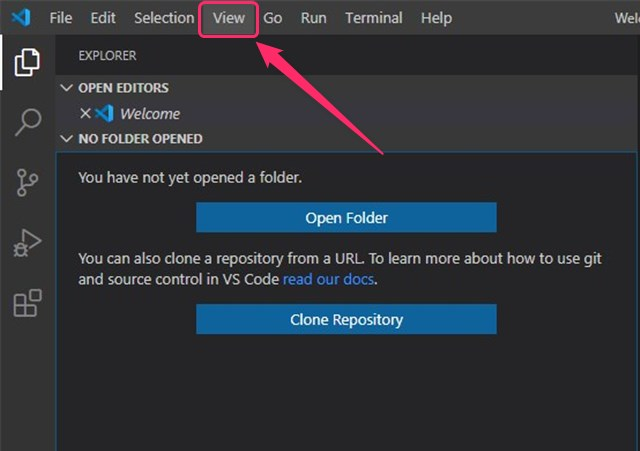
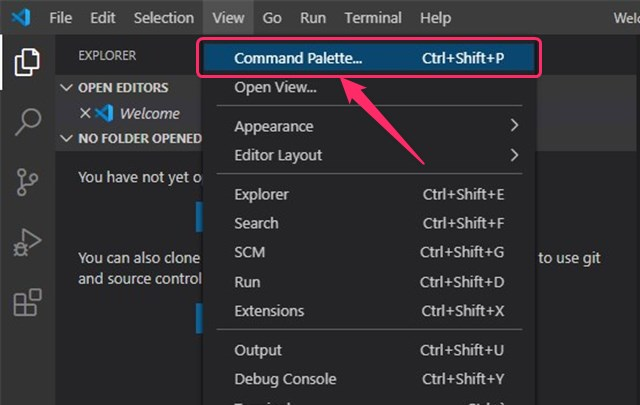
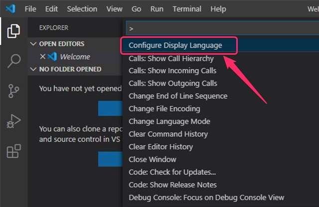
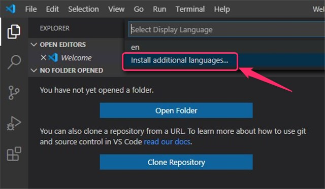
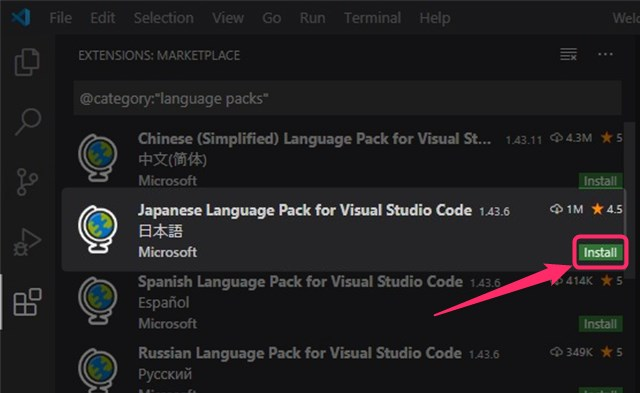
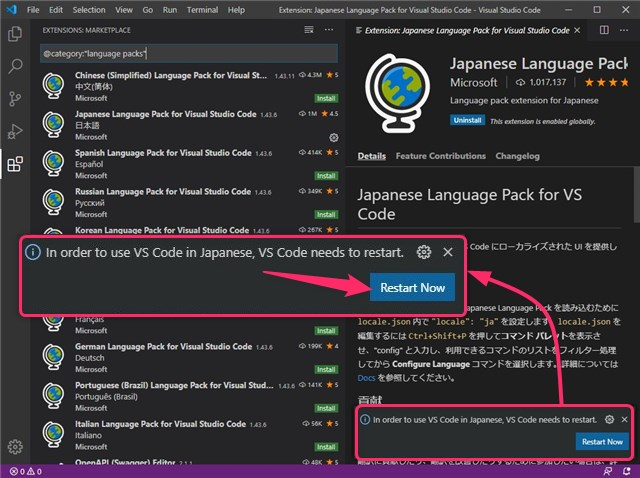
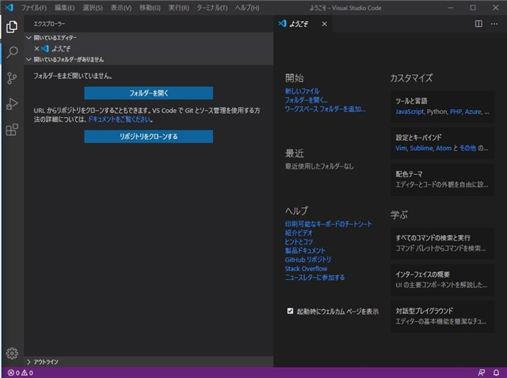

画面上部の 「View」 をクリックします。

「Vew」 のクリック後に選択リストが表示されます。
一覧から 「Command Palette…」 をクリックします。

選択リストの表示一覧から 「Configure Display Language」 をクリックします。

選択リストの表示から 「Install additional languages…」 をクリックします。

画面左側に 「拡張言語パック」 の一覧が表示されます。

一覧の中から 「Japanese Language Pack for Visual Studio Code 日本語 Microsoft」 (下図) を探します。

「Japanese Language Pack for Visual Studio Code」 を探して右下の 「Install」 をクリックします。
インストールが完了すると画面右下に再起動を促す表示がでますので 「Restart Now」 をクリックします。

自動でVSCode の再起動処理が行われ、日本語表示 で起動しました。
